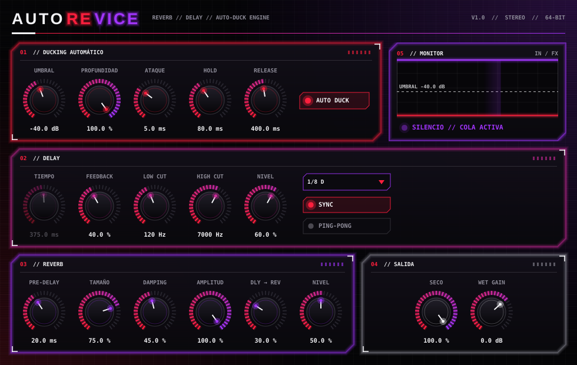

Dos plugins hechos para sonar bien y estorbar poco.
Un soft clipper con la curva de FL Studio y un reverb + delay que se aparta cuando tocas o cantas y florece cuando paras. Hechos con JUCE y C++.
NoClipper
Soft clipper estilo FL Studio
Controles
- THRES: umbral en dBFS donde empieza la saturación suave.
- POST: ganancia después del clipper (80 % = 0 dB, igual que en FL).
- Medidor de salida L/R y gráfico de la curva en tiempo real.
Detalles
- La curva se midió con exportaciones reales del Soft Clipper de FL, con error máximo cercano a -86 dB.
- Umbral por defecto igual que en FL: 100/128 (-2,14 dBFS).
- Funciona en cualquier DAW que cargue VST3 o AU.
AutoReVice
Reverb + delay con ducking automático

Los efectos se esconden mientras entra señal y aparecen solo cuando te callas. Es lo que normalmente se logra con un compresor en sidechain sobre el bus de efectos, pero automático: el plugin escucha su propia entrada, así que no hay que rutear nada en el DAW.
Cómo funciona
- Un detector rápido mide el nivel de la señal seca.
- Si pasa el Umbral, los efectos bajan según Profundidad y Ataque.
- Al callarte, espera el Hold y los efectos suben con el Release.
- Delay y reverb siguen recibiendo señal siempre; solo se atenúa su salida. Por eso oyes la cola completa.
Qué trae
- Delay libre o sincronizado al tempo (1/1 a 1/32, puntillo y tresillo), ping-pong y filtros en el lazo.
- Reverb con pre-delay, tamaño, damping y amplitud.
- Formatos: VST3, AU (Mac), CLAP, LV2 (Linux) y Standalone.
Descargas
Todavía no hay descargas públicas.
Los dos plugins se compilan automáticamente para Windows y Mac (AutoReVice también para Linux) con GitHub Actions. Por ahora el código está en repositorios privados, así que aún no hay enlaces de descarga aquí.
Cuando haya versiones listas para compartir, aparecerán en esta sección.